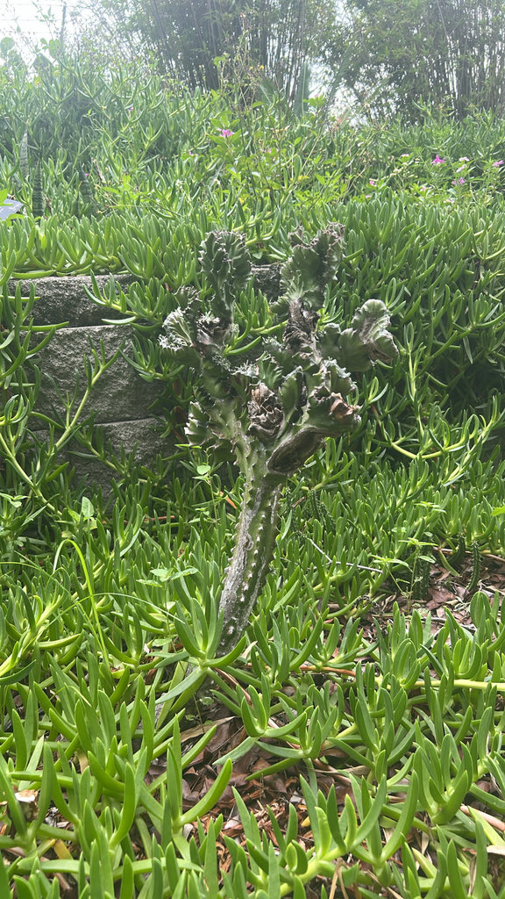

- What you are looking at is actually two plants fused into one. The wavy, ruffled fan on top is a crested mutation of Euphorbia lactea — known as the Cristata form — grafted onto the trunk of a different euphorbia species, Euphorbia neriifolia, which supplies the roots. The join between them, a calloused seam near the base of the fan, is visible if you look closely.
- Despite looking exactly like a cactus — angular ribbed arms, paired black spines, no visible leaves — this plant is not a cactus at all. True cacti are native to the Americas; Euphorbia lactea hails from the Indian Subcontinent. The two families arrived at the same thorny, succulent body plan entirely independently, on opposite sides of the planet.
- Every part of this plant is filled with thick white latex sap. When a stem is broken, the sap hits air and begins to coagulate almost immediately — a natural quick-seal that protects the wound and can physically gum up the mouthparts of insects that try to feed on it.
Euphorbia lactea is native to the arid and subtropical regions of South Asia, primarily the Indian Subcontinent — including India and Sri Lanka — where it grows in dry scrub and open rocky terrain. It has long been widely cultivated across tropical Asia, the West Indies, and elsewhere, and has at times escaped cultivation to form dense thickets in areas with suitable climate.
In Florida it is established as an ornamental, particularly in South Florida landscapes, and UF/IFAS recognizes it as a salt-tolerant shrub suited to southern parts of the state. It arrived in cultivation here as part of the broader mid-twentieth-century enthusiasm for dramatic, low-water accent plants that could handle Florida's heat and coastal conditions.
- Euphorbia lactea is one of the clearest examples of convergent evolution — meaning two completely unrelated plant families, on opposite sides of the world, independently evolved the exact same set of survival features. Cacti evolved in the Americas; euphorbias in Asia and Africa. Neither borrowed from the other.
- Both independently solved the same problem — how to thrive in hot, dry places with unpredictable rain — and arrived at the same answer: water-storing stems, reduced or eliminated leaves, and spines for protection. The result looks identical even though the two groups share no close ancestry.
- The genus Euphorbia is enormous — over 2,000 species — and one of the most ecologically diverse plant genera on Earth, ranging from tiny annual weeds to towering succulent trees.
- Euphorbia lactea sits at the dramatic end of that spectrum: a slow-growing shrub or small tree that can reach 15 feet outdoors, with a multi-branched, candelabra silhouette (imagine a giant, multi-armed chandelier rendered in green-and-white sculptural stems).
- The stems have three to four angled ridges, each lined with paired black spines, and a mottled green-and-white surface pattern that gives the common name 'mottled spurge' its logic. In India the plant has a long history of traditional use — the latex has been applied medicinally, though its toxicity makes such use a careful business.
- That latex is also the plant's primary defense against herbivores. Euphorbia sap coagulates rapidly on contact with air, forming a sticky, often toxic barrier that can seal a wound and physically gum up the mouthparts of insects before they can take a second bite — a faster, messier deterrent than thorns alone.
- The species epithet lactea, Latin for 'milk,' refers directly to that abundant white sap, the first thing you notice when any stem is broken.
Euphorbia lactea's wildlife value in Florida is limited. The plant rarely flowers in cultivation, and when cyathia do appear near the stem tips, they may receive visits from small bees and other insects attracted to the modest nectar. No specialist pollinator relationships are documented for this species in Florida or North America.
Because it is a non-native plant without co-evolutionary ties to Florida's fauna, it does not function as a larval host for local butterflies or moths. Visitors looking for the park's best pollinator habitat will find it among the native plantings elsewhere on the grounds.
In cultivation, Euphorbia lactea is propagated almost entirely by stem cuttings. Cuttings are taken in spring or summer, allowed to dry and callous for several days (this also lets the latex sap seal), and then planted in well-draining soil. Seed propagation is possible but rarely practical because the plant flowers infrequently in cultivation.
Mottled spurge rarely flowers, especially when grown as a container or accent plant. When it does bloom, the flowers are small, yellow-tinged, and inconspicuous — technically paired cyathia (the characteristic Euphorbia flower structure, where what looks like a single bloom is actually a cluster of reduced male and female flowers enclosed by a cup-shaped structure).
They appear near the growing tips.
The stems do the work that leaves do in most plants — they are green, succulent, and photosynthetically active. Each stem is distinctly three- to four-angled in cross section, with ridges bearing paired black spines up to about 5 millimeters long. The mottled white-and-green patterning along the stem surface is characteristic of the species and is what prompted the name 'mottled spurge.'
Small leaves do appear at the growing tips, particularly during active growth in warmer months, but they are short-lived and drop quickly. For most of the year the plant appears entirely leafless — the stems are the primary photosynthetic surface.
The 'Cristata' cultivar — widely sold as 'Coral Cactus' and the form present at this park — results from a rare mutation in which the growing tip proliferates laterally instead of upward, producing a fan- or ribbon-shaped crest rather than branching stems.
Because this crested top cannot support itself on its own roots, it is grafted onto the trunk of Euphorbia neriifolia, which provides structure and a functioning root system. The result is literally two different plants fused into one.
This specimen is the grafted Cristata form, so start at the top: the wavy, ruffled fan-shaped crest is the mutant Euphorbia lactea, and the plain cylindrical green stem below it is a different plant entirely — Euphorbia neriifolia.
Look closely near where the two halves meet and you should be able to see the graft union: a calloused seam or V-shaped scar where the crested top was fused onto the rootstock. On the lower stem, notice the angled ridges lined with small paired black spines. In the rare event the plant is in bloom, look for tiny yellow-tinged flower clusters near the tips of the crest.
The white latex sap is a genuine hazard — treat any broken stem as you would a caustic chemical. Skin contact causes contact dermatitis ranging from mild irritation to blistering, and sap reaching the eyes causes immediate severe pain, burning, and photophobia; if left untreated it can cause lasting corneal damage.
The most common route to eye exposure is indirect: sap on hands or tools transferred to the eye when someone wipes their face or rubs their eyes, so wash hands thoroughly and wear gloves and eye protection whenever cutting or handling a broken stem. Ingesting any part of the plant causes blistering of the lips and oral mucosa.
The sap is equally toxic to dogs and cats; if a person or pet has had sap contact with the eyes, or if any part of the plant has been swallowed, seek medical or veterinary attention promptly — for pets, the ASPCA Animal Poison Control Center is reachable at (888) 426-4435.
The specimen at Palma Sola Botanical Park is the grafted crested cultivar — Euphorbia lactea 'Cristata' fused onto a trunk of Euphorbia neriifolia. That grafted nature is one of the most reliably surprising facts about this plant for any visitor and is worth calling out clearly on the sign.
UF/IFAS extension documents list Euphorbia lactea as a salt-tolerant shrub for South Florida landscapes. Its hardiness range is listed as Zone 10 and above, so the specimen here is near the northern edge of reliable outdoor hardiness; in an unusually hard freeze, watch for soft water-soaked stem tips or tip-dieback, which are the first signs of cold stress in succulent euphorbias.
Across its native South Asia and in parts of the Caribbean and Zone 10–11 United States, Euphorbia lactea is frequently planted as a living fence or thorny barrier hedge around pastures — its spines and toxic sap make it an effective deterrent to livestock and intruders alike.


- © Denise Sosa (CC-BY-NC), via iNaturalist
- © elurding (CC-BY-NC), via iNaturalist